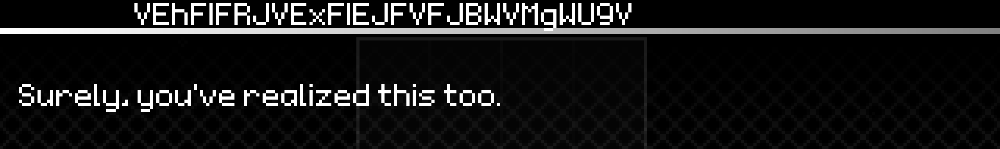
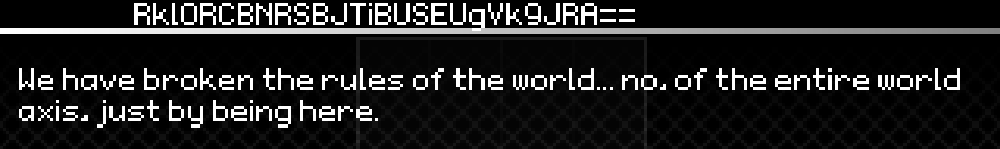

Play Memories Sacrafice in Boundary Shatter. You'll notice that the usual indecipherable text where the name of the one
speaking to you would be has been replaced with the string "VEhFIFRJVExFIEJFVFJBWVMgWU9V".

This translates to "THE TITLE BETRAYS YOU" in Base64.
Equip the "Sacraficial" title you obtain from doing this
and replay the song, now it'll say "RklORCBNRSBJTiBUSEUgVk9JRA==".

Or, "FIND ME IN THE VOID", telling you to go search Betweenspace.
Look for the ??? NPC in the left puzzle area of Layer 2,
talk to them and they'll tell you what you need to know (exit and re-open Betweenspace for the new UI element to appear).
Now that you have the VTC clock ,
you can start searching for the Void Lens or use this tool (by BlockOG, edit of arcorann's fiddle)
if you don't feel like looking to get the location immediately.
The Lens changes its location every VTC, or every 30 minutes and 50 seconds,
though it can only spawn in one of eight rooms. VTCs are universal, so re-opening the game or another instance won't reset the timer.
Picking up the Lens will open up four rifts across Betweenspace with new areas in the True Void, each with new logs and a song.
Completing all four of these songs will cause a fifth rift to appear containing B3611V locked behind a
requirement, which differs per difficulty.
"How do I get to the dark room in a wall in the Archives?"
In the room with Seraphiel, walk over a strange tile  next to a bookshelf, walk back to where the dark room's entrance is, the wall will be darkened and you'll be able to walk through.
next to a bookshelf, walk back to where the dark room's entrance is, the wall will be darkened and you'll be able to walk through.